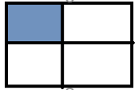

ДЗ №10
При розв’язанні задач намагайтесь використовувати відповідні методи (map, filter, reduce,…) всюди, де це можливо
Задача. Дано історію цін на цінні папери за деякий період (згенерувати від 1 до 10000)
-
Знайти суми елементів у вказаній області
- 


- Суму парних рядків
- Суму непарних стовпців
- У парних рядках – непарні стовпці, у непарних – парні.
-
Дано інформацію про прибуток К магазинів протягом тижня. Знайти :
- загальний прибуток кожного масиву за тиждень;
- загальний прибуток усіх магазинів по дням (загальний прибуток усіх магазинів за понеділок, за вівторок, і т.д.);
- загальний прибуток за робочі дні
- загальний прибуток за вихідні дні
- максимальний прибуток за середу
- сформувати загальний список (одновимірний масив) зі значенням, які що більші за 200
- відсортувати кожен тиждень за зростанням
- відсортувати тижні (рядки) за спаданням максимального елементи у цьому тижні (рядку), тобто при порівнянні рядків потрібно порівнювати максимальні елементи у кожному з цих рядків
- упорядкувати тижні (рядки) за спаданням суми елементів у рядку (тобто при порівнянні двох рядків треба знайти суму кожного з рядків і порівнювати ці суми, на основі цих сум буде зрозуміло, який з елементів повинен іти раніше).
-
Морський бій. Випадковим чином на двовимірному полі розміром 6*6 розташовується 5 кораблів. Користувач стріляє вказуючи координати. Гра продовжується поки не потоплено усі кораблі або у користувача не закінчаться снаряди.